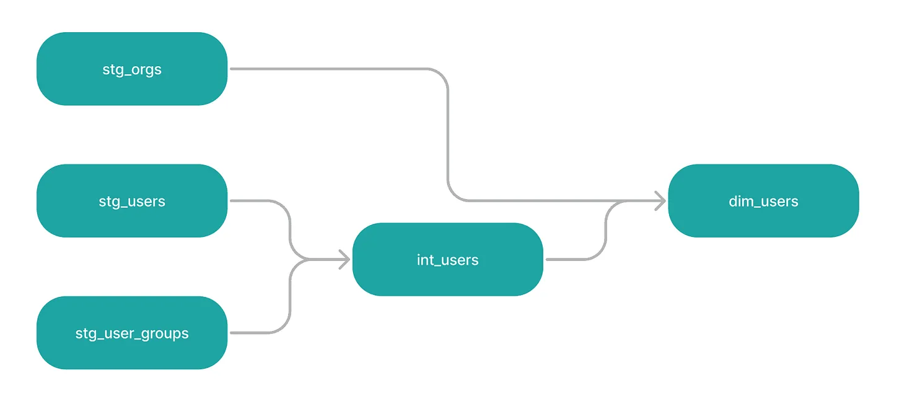
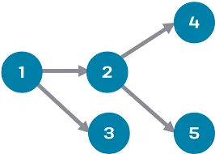

Your stg__customers model already builds. So why are we doing this exercise? Because
from main.raw_customers is a black box to dbt — it has no idea that table exists, nothing to put
on the DAG, no way to track lineage or order builds correctly. This lesson is about fixing that.
A source in dbt is a logical name for a raw table that landed in your warehouse from
outside dbt — from Fivetran, Airbyte, a streaming pipeline, our scripts/ingest_raw.py.
You don’t build sources with dbt run; you just declare they exist. Once declared, they
become first-class nodes that {{ source(...) }} can target and that show up on the lineage graph.
| Type | Who creates it | How you reference it |
|---|---|---|
| Source | Something outside dbt (Fivetran, our ingest script, etc.) | {{ source('raw', 'raw_customers') }} |
| Model | dbt itself, when you run dbt run. |
{{ ref('stg__customers') }} |
| Seed | dbt itself, from a CSV under seeds/, on dbt seed. |
{{ ref('country_codes') }} — same as a model |
Both macros — source() and ref() — compile to a fully-qualified table name.
The difference is who owns the upstream: source() says “I trust this table is already
here”; ref() says “dbt built this; build the dependency first.”

DAG stands for directed acyclic graph. The buzzword sounds intimidating, but the idea is
simple: every source, model, seed, and test in your project is a node; every
{{ source(...) }} or {{ ref(...) }} call is an arrow from one node to
another. “Acyclic” just means the arrows never loop back — data flows downstream only.
The easiest mental model: a family tree of your data. Parents are sources or upstream models,
children are downstream transformations. dbt builds the tree automatically from your source() and
ref() calls and then uses it to:
dbt run.dbt docs serve).--select source:raw+.
A hardcoded FROM main.raw_customers is invisible to all of that. The model still builds, but
dbt’s mental model of your project is wrong — lineage breaks, selectors don’t work, freshness
checks have nothing to attach to. The fix is one YAML file.
Sources live in a YAML file inside models/. The convention is _sources.yml alongside the
staging models:
version: 2
sources:
- name: raw # ← the "source" argument in source('raw', ...)
description: "Jaffle shop raw tables landed by scripts/ingest_raw.py"
schema: main # ← DuckDB schema where the tables live
tables:
- name: raw_customers # ← the "table" argument in source(..., 'raw_customers')
- name: raw_orders
- name: raw_payments
What this does:
raw living in schema
main.”{{ source('raw', 'raw_customers') }} from any model.You can also attach extra metadata:
loaded_at_field and a max age, and
dbt source freshness warns or errors if data is stale (e.g. orders haven’t been updated in24h). A health check on raw data, baked into the project.
We’ll layer those on in Stage 3. The bare-bones declaration above is the minimum dbt needs to compile
{{ source(...) }}.
With the source declared, change the model’s from line:
-- before (hardcoded)
from main.raw_customers
-- after (source-aware)
from {{ source('raw', 'raw_customers') }}
That’s the only line that changes. dbt run --select stg__customers behaves exactly the same way:
green node, same view in DuckDB, same row count. What changed is dbt’s understanding of your project
— the source is now a node, the dependency is now an edge, the DAG is now correct.
source('raw', ...) must
equal the name: field in _sources.yml. Typos here become “Found a source …
but no matching source declaration.”scripts/ingest_raw.py writes to DuckDB’s default
main schema. schema: raw looks correct (it matches the source name), but
it’s wrong — schema: is the physical location, not the logical name._sources.yml under models/. — dbt only loads
YAML files inside the configured model paths. _sources.yml at the project root or under
seeds/ is silently ignored.Press n to start the exercise.
1. Make sure you’re inside dbt_project/:
cd dbt_project # if you're not already here
2. Create dbt_project/models/staging/_sources.yml and paste:
version: 2
sources:
- name: raw
description: "Jaffle shop raw tables landed by scripts/ingest_raw.py"
schema: main
tables:
- name: raw_customers
- name: raw_orders
- name: raw_payments
What this YAML does:
raw living in DuckDB schema main.”{{ source('raw', 'raw_customers') }} from any model.The leading underscore in
_sources.ymlis convention — files starting with_sort to the top of the folder so configs are easy to find. dbt doesn’t care about the name.
3. Open dbt_project/models/staging/stg__customers.sql and replace the hardcoded from line with a source() call:
select
id as customer_id,
first_name,
last_name
from {{ source('raw', 'raw_customers') }}
The rest of the file stays exactly the same.
4. Run it:
dbt run --select stg__customers
You’ll see the same green success line as before — but the underlying compiled SQL has changed, and dbt now knows the dependency.
5. Confirm the source is on the DAG:
dbt ls --resource-type source
You should see three entries:
dbt_project.raw.raw_customers
dbt_project.raw.raw_orders
dbt_project.raw.raw_payments
These are first-class DAG nodes now. Lineage, selectors (--select source:raw+), and dbt source freshness all work against them.
6. Press v to verify.
dbt_project/models/staging/_sources.yml exists and is non-trivially populated.The verifier doesn’t re-run dbt — first_model already covered that. This exercise just confirms you’ve added the source declaration. (You should also still see green from dbt run --select stg__customers, which proves the model parses with the macro.)
| Symptom | Fix |
|---|---|
Found a source ... but no matching source declaration |
Either _sources.yml is missing, the name: doesn’t match source('raw', ...), or raw_customers isn’t listed under tables:. |
Relation "dev"."raw"."raw_customers" does not exist |
Wrong schema: in _sources.yml. Should be main (DuckDB’s default — that’s where ingest_raw.py writes). |
YAML parse error (mapping values are not allowed in this context) |
YAML indentation. Use spaces, never tabs. Two-space indent per level. |
Press n. The last exercise of Stage 1 sets a default materialization for everything in staging/.